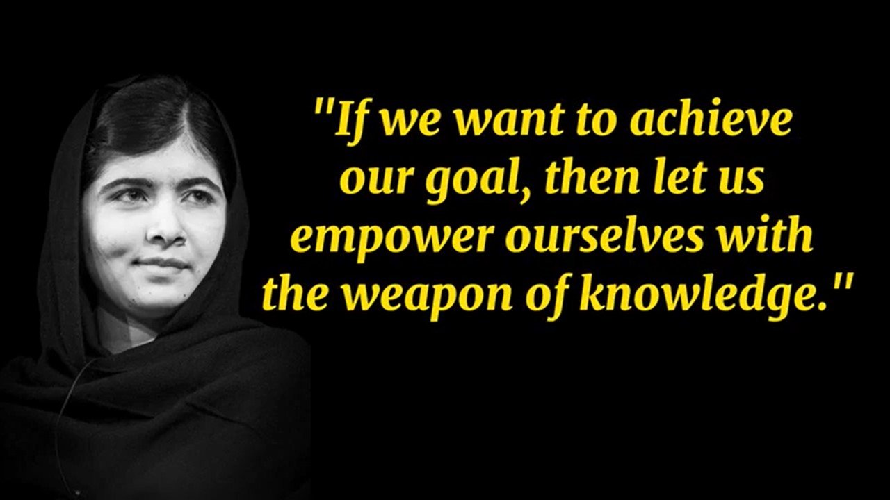
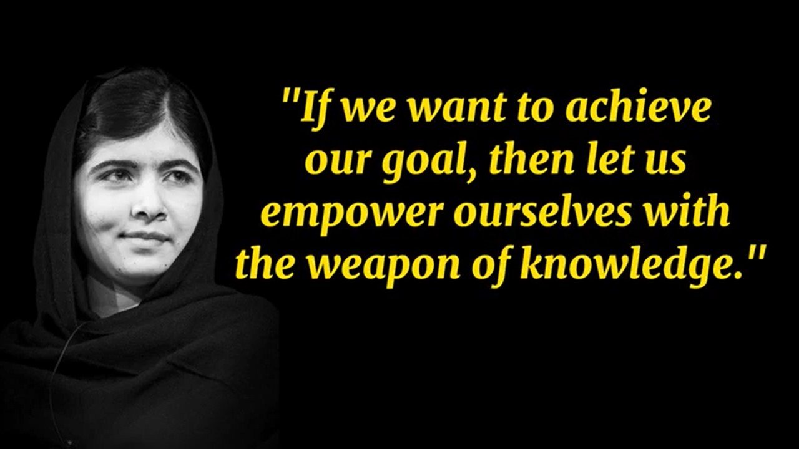

Biographie
Malala Yousafzai est une militante pakistanaise pour l'éducation des filles, née le 12 juillet 1997 dans la vallée de Swat. À 11 ans, elle a commencé à écrire un blog pour la BBC sous un pseudonyme, décrivant la vie sous les talibans, qui avaient interdit l'éducation des filles dans sa région. En 2012, elle a survécu à une tentative d’assassinat par les talibans, ce qui lui a valu une reconnaissance mondiale.
Réalisations
- Prix Nobel de la Paix, 2014
- Création du Fonds Malala pour l'éducation des filles
- Discours aux Nations Unies sur les droits des filles à l'éducation
Actualités
- 10 octobre 2023 : Discours à l'ONU pour promouvoir l'éducation des filles
- 15 septembre 2023 : Publication de son nouveau livre "Nous sommes déplacés"
Événements à venir
- Novembre 2023 : Conférence à Paris sur l'éducation des filles
- Décembre 2023 : Réunion avec des leaders mondiaux à Londres
Citations

 



Présence sur les réseaux sociaux